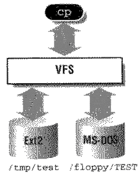
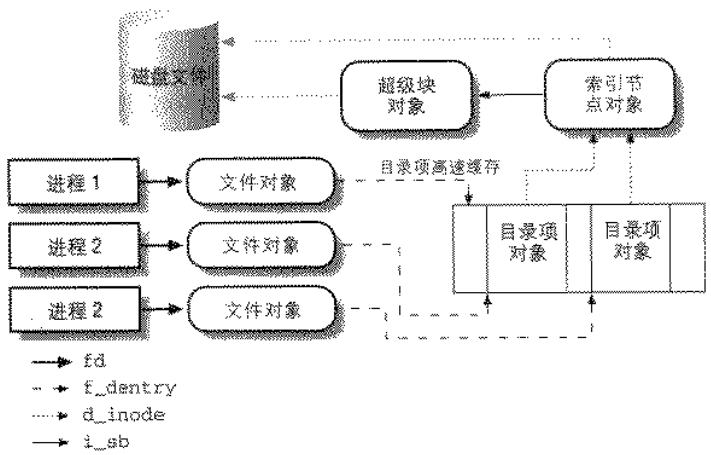

1. 一、什么是虚拟文件系统
1.VFS是用户的应用程序与文件系统实现之间的抽象层

2.VFS支持以下三种类型的文件系统
（1）磁盘文件系统
（2）网络文件系统
（3）特殊文件系统
2. 二、通用文件系统模型
1.VFS的主要思想是引入一个文件系统模型，这个模式能够表示所有支持的文件系统

2.通用文件模型的构成
（1）超级块super_block：存放已安装文件系统的有关信息，所有的超级块对象以双向链表的形式链接在一起
（2）索引结点块inode：存放具体文件的一般信息，对文件是唯一的，并且随着文件的存在而存在
（3）文件对象file：存放打开文件与进程之间进行交互的有关信息，仅在文件被打开时创建，它在磁盘上没有对应的映像
（4）目录项对象dentry：存放目录项与对应文件进程链接的有关信息，它的磁盘上也没有对应的映像
3.参考Linux2.4文件系统中vfsmount、安装点的dentry、设备的dentry之间的关系
一个文件在内核中只有一个inode，但可以有多个file
3. 三、特殊文件系统
1.特殊文件系统提供一种容易的方式来操作内核的数据结构并实现操作系统的特殊特征。
2.常用的特殊文件系统包括：伪终端支持、管道、套接字、USB设备等
3.特殊文件系统不限于物理块设备
内核给每个安装的特殊文件系统分配一个虚拟块设备，让其主设备号为0而次设备号为任意值
4. 四、文件系统的安装
1.大多数传统的类UNIX系统中，每个文件系统只能装一次
Linux中同一个文件系统可以多次安装
2.一个文件系统被安装n次，它的根目录就可以通过n个安装点来访问，但在内存中的超级对象块只有一个
3.可以把多个文件系统安装到一个安装点上
同一安装点上，新的文件系统安装上后，旧的文件系统被隐藏
顶层的文件系统被删除后，下一层的文件系统才可见
4.安装普通文件系统的过程，见Linux2.4安装一个文件系统
卸载普通文件系统的过程，见Linux2.4文件系统的卸载
5.安装根文件系统
（1）安装特殊rootfs文件系统，该文件系统为初始安装点提供一个根目录
（2）内核在空目录上安装实际根文件系统
5. 五、路径名查找
分析路径名，并把它拆分成一个文件名序列，依次获得相应的索引节点
见Linux2.4从路径名到目标结点
6. 六、文件的打开、读、写、关闭
1.打开：Linux2.4打开一个文件的系统调用
2.读：read()把数据从文件拷贝到缓冲区
3.写：write()把数据从缓冲区拷贝到文件
4.关闭
7. 七、文件加锁
1.劝告锁：
由进程之间自己协调，内核只提供加锁以及检查文件是否已经加锁的手段，但并不参与锁的实施
如果有进程不检查目标文件是否已经上锁就往里写，内核是不加阻拦的
2.强制锁：
由内核强制实施，如果进程不遵守规则，内核加以阻拦、
3.租借锁：
当一个进程试图打开被租借锁保护的文件时，它会被阻塞。
同时，拥有锁的进程会收到一个信号，于是更新文件，并释放锁
如果拥有锁的进程没有在要求时间内释放，则租借锁自动删除，允许被阻塞的进程继续执行